Unidade 6 — Agentes LLM
Disciplina: Aplicações de Modelos de Linguagem Natural
1. Introdução
Ao longo desta disciplina, percorremos um caminho em etapas. Nas Unidades 1 a 3, aprendemos a construir, aprimorar e proteger prompts: vimos o que é um prompt, conhecemos técnicas como few-shot, Chain-of-Thought e ReAct, e estudamos os ataques de injeção de prompt e suas defesas. Nas Unidades 4 e 5, demos ao LLM acesso a conhecimento externo por meio do RAG, construindo um pipeline completo de recuperação, aumento e geração.
Agora damos um passo além. Em vez de apenas gerar texto em resposta a um prompt, o LLM passa a agir com autonomia, perseguir objetivos e interagir com o mundo. É isso o que chamamos de agente de IA. A mudança é grande, e não apenas incremental: enquanto um LLM precisa de muita orientação a cada passo, um agente consegue decidir sozinho quais ações tomar, quando e como.
Neste material, a palavra "agente" significa sempre agente baseado em LLM. Existem outros tipos de agentes de IA que não usam LLMs, mas eles não são o foco aqui. Os agentes de programação já fazem parte do dia a dia de muitos desenvolvedores, e os agentes estão chegando a áreas como finanças, saúde, marketing e pesquisa científica.
Nesta unidade, veremos primeiro o que é um agente e como um LLM é "aumentado" com memória, ferramentas e planejamento. Em seguida, estudaremos a memória dos agentes e a engenharia de contexto, o uso de ferramentas (incluindo o Model Context Protocol e as Skills) e, por fim, os sistemas multiagentes.
2. O que é um agente de IA?
2.1 Definição de agente
A definição de agente muda à medida que a área avança, mas os seus fundamentos são estáveis. O livro que serve de base para esta unidade adota a definição clássica de Russell e Norvig:
Definição clássica de agente.
Essa definição reduz o agente a uma entidade que percebe e interage com o seu ambiente. Ela é ampla o suficiente para incluir entidades que não são LLMs, mas oferece uma estrutura clara, com quatro componentes:
- Ambiente: o mundo com o qual o agente interage.
- Sensores: os componentes usados para observar o ambiente.
- Atuadores: as ferramentas que o agente usa para interagir com o ambiente.
- Programa do agente: o "cérebro", isto é, as regras que o agente usa para transformar observações em ações.
A Figura 1 mostra como esses componentes se relacionam: o agente recebe percepções do ambiente pelos sensores, o programa do agente decide o que fazer, e os atuadores executam ações sobre o ambiente.
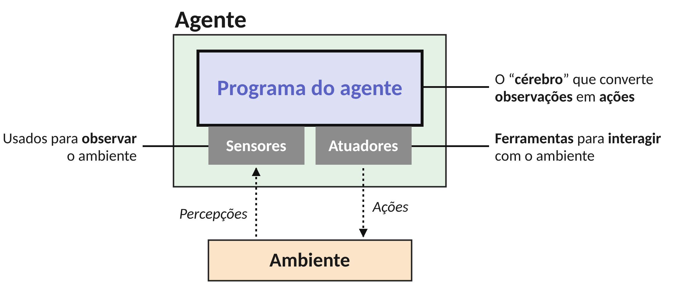
Vamos relacionar essa terminologia aos LLMs. Em um agente baseado em LLM, o programa do agente (o cérebro) é um LLM de raciocínio, capaz de pensamento complexo. Por meio de módulos adicionais (memória, ferramentas e planejamento), esse LLM consegue interagir com o ambiente. Os atuadores são as ferramentas do LLM. Já os LLMs que interpretam mais do que texto, como imagens ou som, podem ser vistos como os sensores.
A peça que falta é o usuário, que pode fazer parte do ambiente e que normalmente inicia a interação, fazendo um pedido para o agente cumprir. A Figura 2 mostra como tudo isso se conecta e serve de "mapa" para o restante da unidade.
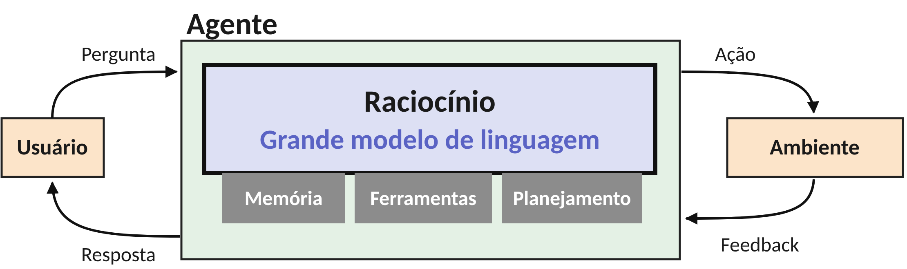
Repare que o usuário envia uma pergunta e recebe uma resposta, enquanto o ambiente recebe ações e devolve feedback. Cada um dos blocos da figura (o LLM de raciocínio, a memória, as ferramentas e o planejamento) será explicado nas próximas subseções.
2.2 O LLM como "cérebro" do agente
Tradicionalmente, um LLM é um modelo que apenas prevê a próxima palavra a partir de um texto de entrada. Ele primeiro divide a entrada em tokens, processa esses tokens e prevê qual deve ser o próximo. Em seguida, acrescenta o token previsto à entrada e repete o processo. Esse ciclo, chamado de autorregressão, permite gerar respostas inteiras, um token por vez.
Os LLMs evoluíram bastante nos últimos anos:
- O GPT-3.5, que deu origem ao ChatGPT em novembro de 2022, conseguia manter conversas inteiras de forma muito parecida com um ser humano. Nos anos seguintes, os fornecedores de LLMs investiram em escalar o treinamento (mais dados, mais computação e modelos maiores), o que trouxe melhorias previsíveis. Isso é chamado de escalonamento no treinamento (train-time scaling).
- Esse caminho encontrou um teto: aumentar o modelo ficou caro demais para o pequeno ganho de desempenho obtido.
- Um grande avanço veio com os LLMs de raciocínio (reasoning LLMs), como o OpenAI o1 e o DeepSeek-R1. Em vez de "pensar" de forma implícita, esses modelos foram treinados para "pensar em voz alta": eles geram tokens de raciocínio (os "pensamentos") antes de chegar à resposta final. Assim, gastam mais computação para estruturar o problema em subproblemas, o que facilita perguntas que exigem vários passos. Em aplicações como o ChatGPT, esses pensamentos costumam ficar ocultos ou resumidos para o usuário.
O raciocínio é central para os agentes. Fazer planos extensos, escolher as ferramentas adequadas, refletir sobre erros e revisar planos são comportamentos que exigem raciocínio avançado. LLMs de raciocínio se saem melhor em decisões complexas, em problemas de vários passos e em problemas novos; mas, quando se quer respostas rápidas e baratas, os LLMs "comuns" são preferíveis.
Essa ideia já apareceu na Unidade 2: a técnica Chain-of-Thought (CoT) pedia ao modelo, no próprio prompt, que explicitasse o seu raciocínio passo a passo. Os LLMs de raciocínio foram treinados para fazer isso por conta própria, sem precisar de uma instrução específica.
2.3 Aumentando o LLM: memória, ferramentas, planejamento e reflexão
Mesmo um LLM de raciocínio é incompleto. Como entidade do tipo "texto entra, texto sai", ele não controla o ambiente, não se lembra das interações e não aprende com elas. Para resolver isso, o LLM recebe alguns "aumentos".
Memória
Até aqui, consideramos conversas de turno único: uma pergunta e uma resposta. Em conversas de vários turnos, aparece uma falha importante: o LLM não guarda estado (stateless), isto é, não se lembra das conversas anteriores. Sem memória, o LLM é só uma "máquina de respostas".
Uma forma comum de simular memória é acrescentar a conversa anterior ao prompt atual. Na prática, os módulos de memória podem ser bem mais complexos e se parecem com a memória humana, com memória de curto e de longo prazo. Assim como nós, o LLM também sofre com a sobrecarga de informação: memorizar todos os detalhes pode piorar o desempenho. Por isso, é preciso equilibrar a quantidade e a qualidade da informação no prompt, o que se chama engenharia de contexto (detalhada na Seção 3).
Ferramentas
Com memória, o LLM se lembra das conversas, mas ainda não interage com o ambiente. Ferramentas externas, de uma calculadora ou um buscador até o acesso ao terminal e ao ambiente de programação, ampliam as suas capacidades.
Porém, o LLM não executa ferramentas sozinho. Como função "texto entra, texto sai", ele só consegue expressar a intenção de agir. Por exemplo, ao receber "Quanto é 5,1 vezes 7,3?", o LLM pode gerar o texto multiply(5.1, 7.3). Esse texto apenas representa a intenção; é um software externo (escrito pelo desenvolvedor, possivelmente com ajuda de um framework de agentes) que lê a saída (por exemplo, em JSON), escolhe a ferramenta correta, preenche os parâmetros e a executa. A Anthropic chama o LLM com memória e ferramentas de "LLM aumentado" (augmented LLM).
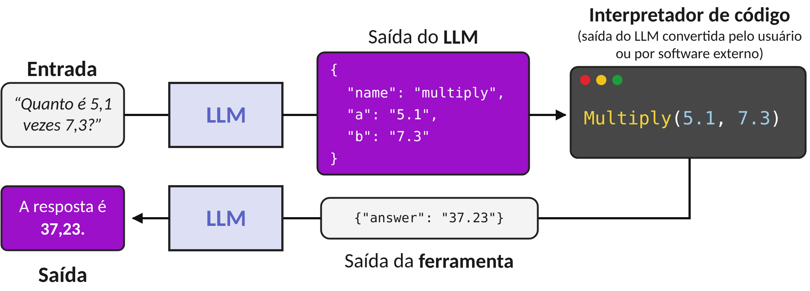
Na Figura 3, o primeiro LLM não calcula nada: ele apenas produz um JSON dizendo qual função chamar e com quais argumentos. O interpretador de código executa a multiplicação, e o resultado (37.23) é entregue de volta a um LLM, que redige a resposta final para o usuário.
Planejamento e reflexão
O ingrediente final para ir de um LLM "comum" a um agente é a capacidade de planejar e refletir. Se o LLM tem acesso a dezenas de ferramentas (por exemplo, todas as funções da API do GitHub), como ele decide qual usar?
O planejamento consiste em dividir uma tarefa grande em passos menores e executáveis, a chamada decomposição de tarefas. O agente cria um plano, executa uma tarefa por vez e, ao terminar cada uma, raciocina sobre qual deve ser o próximo passo. Mas criar o plano não basta: no meio do caminho, o agente pode descobrir que alguns passos não são adequados. Por exemplo, um agente que pesquisa artigos descobre que o Google e o arXiv são insuficientes e acrescenta ao plano a busca no Semantic Scholar e no PubMed. Ao refletir sobre o próprio comportamento, o agente tenta encontrar os seus erros e corrigi-los, criando um ciclo de planejar, agir e refletir.
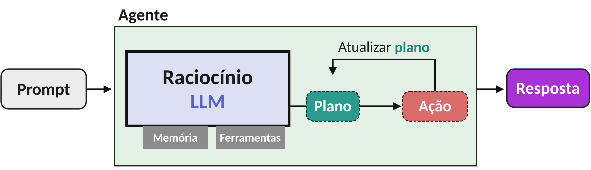
Chegamos, assim, à definição: um LLM de raciocínio aumentado com memória, ferramentas, planejamento e reflexão é o que consideramos um agente de IA. Note que o ciclo "pensar, agir, observar" da Figura 4 é exatamente a ideia do ReAct, vista na Unidade 2.
2.4 Autonomia
O agente tem bastante liberdade: pode escolher entre ferramentas, atualizar o plano, acrescentar passos ou parar quando chegou a uma resposta adequada. Esse comportamento é a autonomia concedida ao agente.
Na prática, nem todo agente tem autonomia total. Muitas vezes são necessários guardrails para que o modelo não tome ações potencialmente destrutivas, como apagar arquivos importantes. Os guardrails já apareceram na Unidade 3, como defesa contra a injeção de prompt; aqui eles servem também para limitar o que o agente pode fazer.
A autonomia existe em um espectro. Ela pode ser parcial (o modelo executa um único passo, mas escolhe livremente entre ferramentas) ou total, sem nenhuma restrição. Para alguns, um sistema é tanto mais "agêntico" quanto mais controle o LLM tem sobre as suas ações. Nesse material, vamos considerar que, se há comportamento orientado a objetivos e tomada de decisão, já se pode falar em agente, inclusive em fluxos de trabalho orquestrados com autonomia parcial.
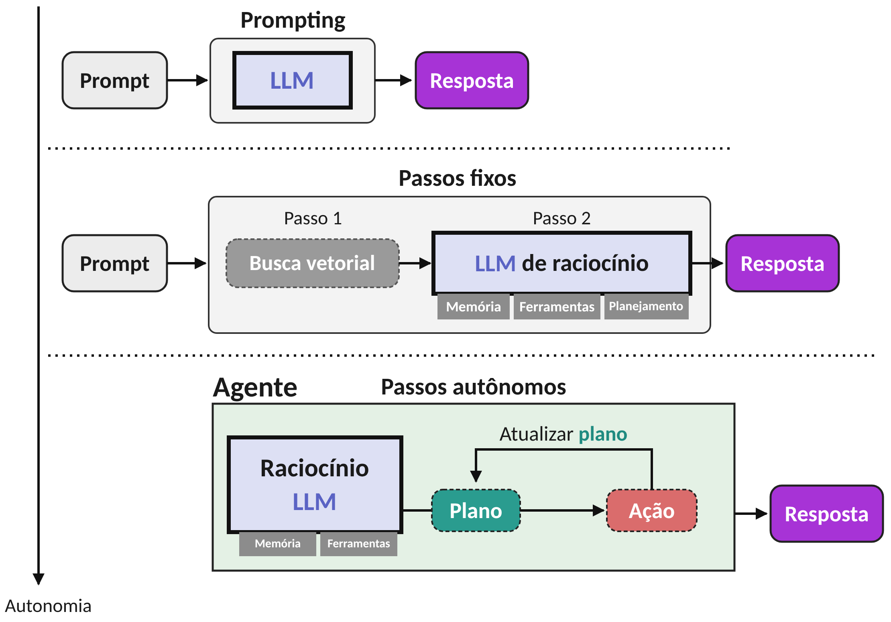
A Figura 5 pode ser resumida em três níveis crescentes de autonomia:
Três níveis crescentes de autonomia, como na Figura 5.
Repare que o pipeline RAG das Unidades 4 e 5 corresponde ao nível intermediário: os passos (recuperar e depois gerar) são sempre os mesmos. Em um agente, é o próprio LLM que decide quais passos executar e em que ordem.
2.5 Aplicações dos agentes
A autonomia torna os agentes especialmente úteis em problemas abertos, nos quais os passos exatos não são conhecidos de antemão: o objetivo é claro, mas o caminho não. Exemplos de usos:
- Programação: assistentes como Antigravity, Claude Code e Codex são, provavelmente, o uso mais comum. O objetivo costuma ser claro (uma funcionalidade específica), os requisitos são definidos (linguagem, frameworks) e o código pode ser verificado automaticamente.
- Pesquisa aprofundada (deep research): o agente pesquisa um tema de forma autônoma em fontes como arXiv, PubMed e Google Scholar. O resultado não é perfeito, mas é um ótimo ponto de partida para entrar em um assunto novo.
- Automação: padronizar e automatizar processos, como estruturar dados de pacientes armazenados de formas diferentes em hospitais diferentes, facilitando a pesquisa em saúde.
2.6 Uso responsável e avaliação de agentes
Como os agentes podem agir diretamente no mundo digital ou físico, é preciso considerar as suas implicações éticas. Há quem defenda agentes totalmente autônomos e há quem defenda que eles nem deveriam ser desenvolvidos; a área está no meio desses extremos. Tudo depende do contexto: um agente de programação pode ser muito útil, mas um agente que diagnostica pacientes sem intervenção humana é, com a tecnologia atual, prejudicial. Alguns pontos a considerar:
- Humano no circuito (human in the loop): quanto mais autônomo o agente, maior a necessidade de pessoas autorizarem, verificarem e auditarem as suas decisões, normalmente checando a saída ou os passos intermediários antes de continuar.
- Guardrails: a autonomia total pode ser exagerada para a tarefa e até prejudicial. Um sistema com mais guardrails costuma ser mais eficaz, pois direciona o agente para os comportamentos esperados.
- Desinformação: agentes continuam sendo LLMs e podem gerar informações incorretas com confiança (alucinações). Sistemas em que a informação correta é crítica precisam de verificações adicionais.
Avaliar LLMs já é difícil, e os agentes tornam isso ainda mais difícil, porque raciocinam em vários passos, chamam ferramentas e executam sequências de ações. Grootendorst e Alammar (2026) propõe dois olhares complementares:
- Resultado: a tarefa foi de fato concluída? Por exemplo, a mensagem foi enviada?
- Trajetória: os passos e as chamadas de ferramentas foram eficientes e corretos?
Duas propriedades extras merecem atenção. A confiabilidade: o agente acerta sempre, e não só uma vez, já que as suas saídas são aleatórias? E a segurança: ele evita danos vindos de um usuário mal-intencionado, de dados manipulados que lê ou dos seus próprios erros? Por isso, avaliar um agente é avaliar um sistema inteiro, e não apenas um modelo.
3. Memória
3.1 Por que agentes precisam de memória
Sozinhos, os LLMs "esquecem": não se lembram de conversas passadas nem das ações que já tomaram. Se você carregar um LLM localmente e pedir que ele lembre o seu nome, ele não conseguirá sem receber memória explicitamente. Já o ChatGPT e o Claude não são LLMs "puros": são LLMs aumentados com módulos de memória e ferramentas.
Sem memória, um assistente pessoal não lembraria as conversas anteriores, um agente de programação não entenderia o projeto inteiro e um agente esqueceria que já executou uma ação e a repetiria. A memória inclui não só as ações passadas do agente, mas também informação externa (por exemplo, a documentação e as issues de um projeto, para um agente de programação).
Memória envolve tanto lembrar quanto armazenar informação nova, e também decidir o que guardar, como guardar e o que esquecer. Com memória, o agente pode lembrar erros e experiências malsucedidas e se sair melhor em tarefas parecidas no futuro. Ferramentas e planejamento também dependem de memória: como usar uma ferramenta ou seguir um plano se o agente os esquece?
3.2 Tipos de memória
A memória dos agentes costuma imitar os tipos de memória humana. O artigo "Cognitive Architectures for Language Agents", descreve quatro tipos de memória comuns em agentes: uma de curto prazo e três de longo prazo.
- Memória de trabalho (curto prazo): sistema de capacidade limitada que guarda temporariamente a informação necessária para decidir e raciocinar. Para LLMs, é o histórico do chat, reenviado ao modelo a cada chamada.
- Memória episódica (longo prazo): lembrança de eventos e experiências específicas (por exemplo, a sua última festa de aniversário). Para agentes, são as ações já tomadas e os seus resultados.
- Memória semântica (longo prazo): conhecimento sobre o mundo (por exemplo, a capital da França). Para agentes, pode ser a consulta a uma base externa, como a Wikipédia ou o código do projeto.
- Memória procedural (longo prazo): padrões de como fazer as coisas (por exemplo, programar em Python). Para agentes, pode estar nos parâmetros do modelo ou no prompt de sistema, que persiste entre as chamadas.
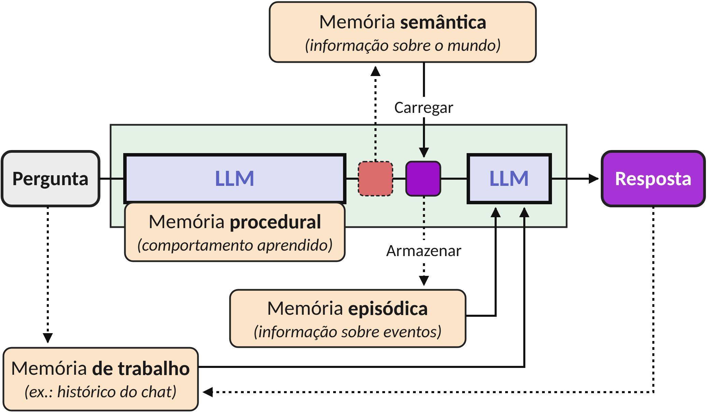
Na Figura 6, a memória procedural está "colada" ao LLM, pois faz parte do seu comportamento; a memória semântica é carregada de uma fonte externa; a memória episódica armazena o que o agente fez; e a memória de trabalho guarda a pergunta e a resposta da conversa em andamento.
Esses tipos de memória nem sempre são armazenados separadamente: dependendo da implementação, podem formar um único conjunto ou bancos separados.
3.3 Memória de curto prazo
A memória de curto prazo é a informação sobre as interações recentes, normalmente a conversa em andamento. Exemplo:
Sem memória, cada chamada ao LLM começa do zero; com o histórico da conversa, o agente "lembra" a interação anterior.
Memória de conversa
O histórico da conversa serve de contexto para gerar respostas. Ele é organizado como uma lista de mensagens, cada uma com um papel (role): o prompt de sistema (system), a pergunta do usuário (user) e a resposta do assistente (assistant). Essas mensagens são atualizadas a cada resposta e reenviadas ao LLM como entrada.
No exemplo da Figura 7, o usuário diz que flamingos são os seus animais favoritos. Quando depois pergunta "Qual é o meu animal favorito?", não é o LLM que "se lembra": ele recebe o histórico inteiro, que contém a informação. Em outras palavras, o LLM não lembra de fato as conversas, ele é informado sobre elas ao inseri-las no prompt.
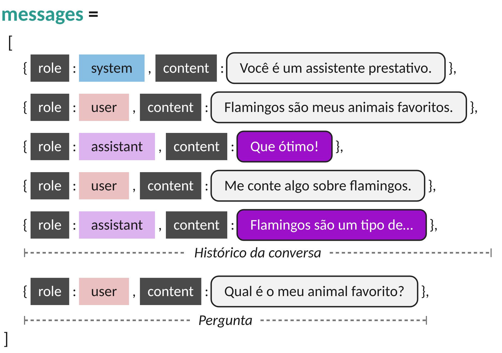
Janela de contexto
A maioria dos LLMs tem uma janela de contexto (context window) limitada: o número máximo de tokens que consegue processar, contando entrada e saída juntas. Exemplo, uma pergunta e uma resposta curtas somam 13 tokens de um total possível de 8.192. Conforme o histórico cresce, cresce o número de tokens. Se o histórico ficar grande demais, a resposta pode ser cortada no meio, ou o LLM pode nem conseguir processar o prompt. Além disso, quanto mais informação no prompt, mais difícil é para o LLM prestar atenção em tudo.
Por isso, existem técnicas para fornecer o histórico sem lotar a janela:
- Corte (trimming): quando o histórico fica grande demais, removem-se as primeiras interações até caber. Exemplo, mantêm-se apenas os dois últimos turnos (pares usuário/assistente). A técnica é simples, mas pode descartar informação importante do início da conversa. Por isso, é importante guardar a conversa completa separadamente, em uma trajetória (trajectory), para depuração.
- Sumarização (summarization): outro LLM (ou o mesmo) resume cada turno e acrescenta o resumo a um resumo geral da conversa, que é enviado junto com a pergunta. O resumo também cresce, mas bem mais devagar do que o histórico bruto. Há variações: resumir os últimos cinco turnos de uma vez, manter um único resumo atualizado a cada turno, ou resumir os turnos antigos e manter os recentes sem compressão. O cuidado é não comprimir demais e perder informação importante.
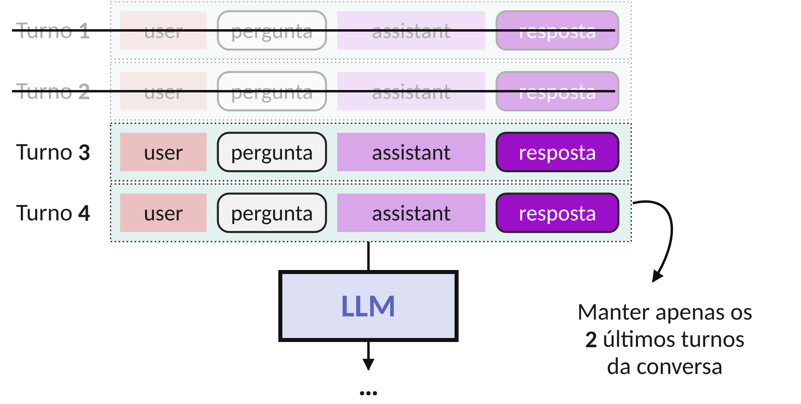
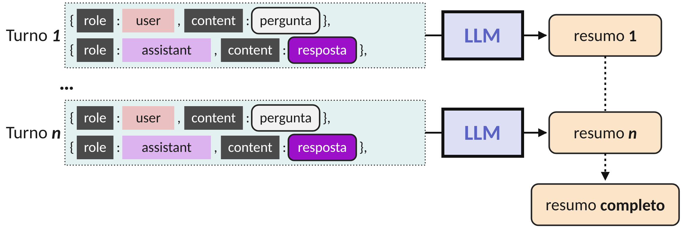
Manter o histórico exige, portanto, entender o que importa: todo o histórico, só o recente ou um resumo? Para conversas curtas, o histórico completo funciona bem; para longas sequências de ações, talvez não.
3.4 Memória de longo prazo
À medida que crescem o histórico e o número de ações, cresce a necessidade de memória de longo prazo, que pode incluir também conhecimento externo ou proprietário. Ela costuma envolver bancos de dados externos consultáveis, com informações sobre execuções anteriores do agente (memória episódica) ou sobre o contexto da aplicação, como os documentos de uma organização (memória semântica).
RAG como memória de longo prazo
O método mais comum é o RAG, que já estudamos nas Unidades 4 e 5. Do ponto de vista dos agentes, o banco de dados vetorial funciona como a memória de longo prazo do LLM. Relembrando: na ingestão, os dados externos são convertidos em embeddings por um modelo de embeddings e armazenados em um banco vetorial. Na inferência, há quatro passos:
- A pergunta é transformada em embedding com o mesmo modelo.
- Ela é comparada ao banco, e os itens mais relevantes são recuperados (por similaridade de cosseno, ou de forma híbrida, combinada com abordagens do tipo bag-of-words).
- Os itens relevantes e a pergunta são combinados no prompt.
- O LLM gera a resposta.
O RAG ajuda a reduzir alucinações, mas não há garantia de que o contexto recuperado seja sempre bom o suficiente. Uma alternativa é aceitar apenas documentos com uma similaridade mínima, em vez de sempre pegar os três primeiros. Veja o exemplo:
Exemplo do livro: o agente só consegue responder porque recebeu, via RAG, os documentos relevantes como contexto.
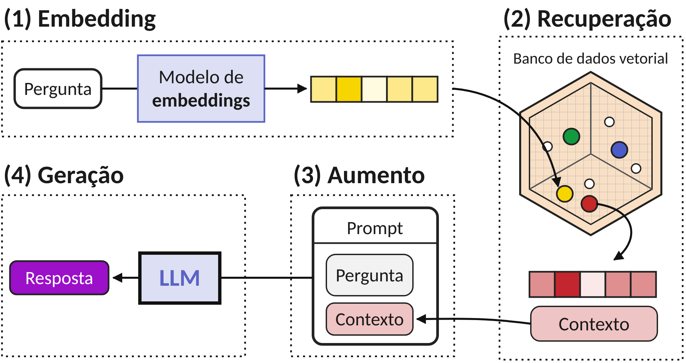
Repare que, entre os três documentos recuperados, apenas um responde de fato à pergunta. Ainda assim, o LLM consegue usar o contexto certo para responder. Esse problema de contexto pouco relevante voltará a aparecer na Seção 3.5.
MemoryBank
Um exemplo de memória mais elaborada é o MemoryBank, um mecanismo que armazena as experiências das conversas em um banco separado e o atualiza continuamente. Ele é inspirado na curva do esquecimento de Ebbinghaus: esquecemos rápido, mas a repetição espaçada reduz o esquecimento. Assim, as memórias recuperadas com frequência ficam mais tempo, e as que não são acessadas por muito tempo podem ser removidas. O MemoryBank usa três tipos de memória: o histórico bruto, resumos de eventos passados gerados por um LLM e um retrato do usuário (traços de personalidade e emoções), sempre enviado como contexto adicional.
RAG agêntico
No RAG simples, o LLM recebe o que foi recuperado, mas não tem controle sobre o que é recuperado. No RAG agêntico (agentic RAG), um agente acessa as bases externas como ferramentas e decide de qual fonte buscar, quantas vezes buscar e quando já tem contexto suficiente para responder.
Com um único agente, ele funciona como um roteador entre várias fontes, podendo inclusive usar o resultado de uma busca para fazer outra busca em outro banco. Em sistemas multiagentes, agentes de recuperação menores e especializados (cada um responsável por uma fonte, que pode ser um banco vetorial, uma busca na web ou uma API como Slack ou Gmail) são coordenados por um agente mais capaz.
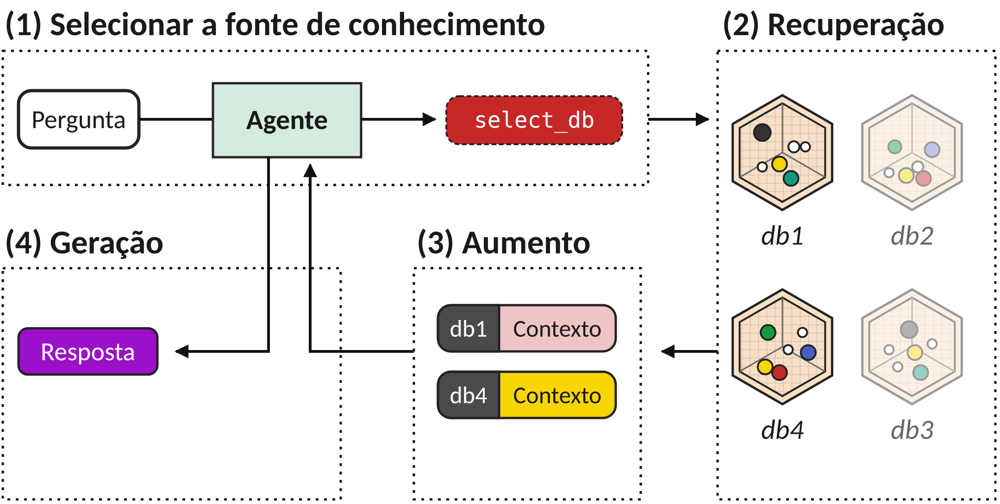
Na Figura 11, o agente decidiu consultar apenas db1 e db4. Com o contexto recuperado, ele pode gerar a resposta ou voltar ao passo 1 para buscar em outra base. A escolha entre um e vários agentes envolve algumas compensações:
Prós e contras do RAG agêntico com um ou com vários agentes (Tabela 4-1 do livro). A recomendação dos autores é começar com um único agente.
A-MEM e Search-o1
O A-MEM é uma memória agêntica inspirada no método de anotações Zettelkasten, em que cada nota guarda uma única unidade de conhecimento (atomicidade) e se liga a outras notas (notas hipertextuais). Cada nota de memória contém a interação original, o horário, palavras-chave, etiquetas e uma descrição contextual geradas pelo LLM. A nota é transformada em embedding e comparada às outras memórias, e o LLM decide a quais delas ligá-la. Em seguida, as memórias antigas ligadas também são atualizadas, criando uma memória que evolui com o tempo.
O Search-o1 faz buscas durante o raciocínio do LLM, usando marcadores especiais para iniciar uma busca e indicar o seu resultado. Como os documentos recuperados podem ser longos e conter informação irrelevante, um módulo chamado Reason-in-Documents condensa a informação recuperada antes de inseri-la no raciocínio.
3.5 Engenharia de contexto
Além dos tipos de memória já vistos, há outras formas de contexto que podem ser dadas ao agente:
Fontes de contexto que podem ser fornecidas a um agente. A lista não é exaustiva: inclui também esquemas de ferramentas e de saída, por exemplo.
Ou seja, o prompt do usuário é só uma parte do contexto total do LLM. Podemos ver o LLM como uma função que recebe tokens (o contexto) e devolve tokens. Para melhorar a saída, ou otimizamos o próprio LLM (treinamento, ajuste fino), ou otimizamos a entrada. A engenharia de contexto (context engineering) consiste em encontrar o melhor contexto, aquele que maximiza a qualidade da saída do LLM para uma tarefa. Enquanto a engenharia de prompt, estudada nas Unidades 1 e 2, otimiza os prompts de sistema e do usuário, a engenharia de contexto otimiza o contexto inteiro (Figura 12).
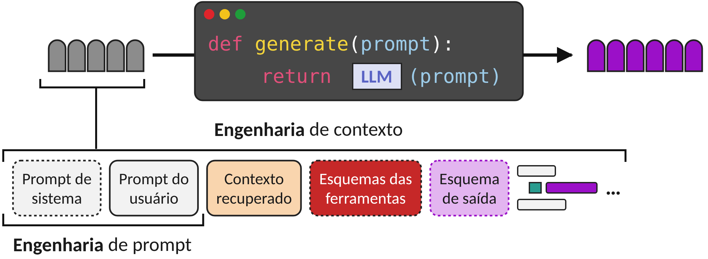
Por que não simplesmente encher a janela de contexto?
As janelas de contexto cresceram muito (o Gemini 1.5 chegou a um milhão de tokens em fevereiro de 2024), e poderia parecer que basta colocar tudo nelas, dispensando até o RAG. Há, porém, três argumentos contra essa ideia:
- O teste da agulha no palheiro (needle in a haystack) coloca um fato aleatório no meio de um texto longo e pede ao modelo que o encontre. Mas encontrar a agulha é só uma tarefa de recuperação, e não mede a compreensão de contextos longos.
- Benchmarks como o RULER mostraram que modelos que iam bem no teste da agulha tinham quedas fortes de desempenho com contextos maiores. Outros estudos chegaram à mesma conclusão, e alguns chamaram o fenômeno de apodrecimento do contexto (context rot).
- Custo e latência: mais tokens significam respostas mais lentas e mais memória de GPU (VRAM). Despejar tudo no contexto é receita para o fracasso.
A engenharia de contexto busca colocar a informação certa, no lugar certo e no formato certo: nem informação demais ou irrelevante (o custo sobe e o desempenho cai), nem de menos (o LLM age sem entender a situação). É, em grande parte, um problema de arquitetura: rastrear, armazenar e recuperar informação de forma eficiente.
Engenharia de contexto em sistemas multiagentes
Em sistemas com vários agentes, é preciso gerenciar o contexto de cada agente e também o contexto compartilhado nas interações entre eles. Agentes menores e especializados podem assumir parte do "peso" do contexto, deixando o agente principal (o orquestrador) com mais recursos. Por trabalharem com contextos menores e responsabilidades claras, esses agentes são mais fáceis de testar e depurar.
Estratégias para otimizar o contexto
- Rastreamento e armazenamento: antes de oferecer contexto, é preciso registrá-lo. Exemplos do que rastrear: o comportamento do agente (uso de ferramentas, saídas, interações entre subagentes, raciocínio, histórico, falhas e sucessos), o comportamento do usuário (intenções, feedback), as fontes de conhecimento (bases proprietárias, documentos externos, arquivos como PLAN.md e REQUIREMENTS.md) e as configurações do sistema (hiperparâmetros, ferramentas disponíveis, políticas e guardrails).
- Seleção: o RAG já é uma forma de selecionar o contexto relevante. Um reranqueador (reranker), geralmente um modelo de linguagem, recebe a pergunta e os documentos recuperados e os reordena por relevância, permitindo ficar só com os melhores. Exemplo, buscar "causas das mudanças climáticas" pode trazer documentos sobre gases do efeito estufa, atividade industrial e desmatamento: todos relacionados, mas nem sempre respondendo diretamente à pergunta. Selecionar contexto também pode significar dar o contexto certo para o agente certo.
- Compressão: resumir o histórico ou os documentos recuperados com um LLM e reduzir a redundância. Mesmo após o reranqueamento, os cinco melhores documentos podem dizer quase a mesma coisa. Aqui entra a MMR (Relevância Marginal Máxima), vista na Unidade 4: ela combina a similaridade de cada documento com a pergunta (relevância) e a similaridade entre os documentos (redundância), usando o parâmetro λ, para escolher documentos relevantes e, ao mesmo tempo, diferentes entre si. Técnicas de deduplicação também ajudam.
- Ordenação: a ordem do contexto importa. Pesquisas mostraram que os LLMs prestam mais atenção ao início e ao fim do prompt e tendem a perder o que está no meio: é o fenômeno perdido no meio (lost in the middle) (Liu et al, 2024). Ele lembra o efeito de posição serial humano: lembramos melhor os primeiros itens (efeito de primazia) e os últimos (efeito de recência) de uma lista.
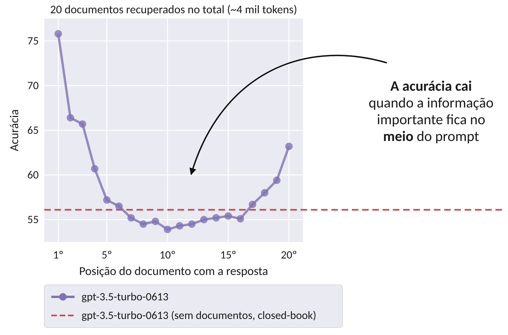
No gráfico da Figura 13, quando o documento com a resposta está entre as posições 7 e 16, a acurácia do modelo fica abaixo até da situação em que ele não recebe nenhum documento (a linha tracejada, chamada closed-book). Isso mostra que a posição da informação no prompt é tão importante quanto a sua presença.
4. Ferramentas, MCP e Skills
4.1 O que são ferramentas
Sozinhos, os LLMs são funções que recebem texto e devolvem texto. Ferramentas (tools), na forma de funções e APIs, permitem que eles interajam com qualquer sistema exposto a eles, de bases de código e ferramentas internas até bancos de dados online e assistentes domésticos. Um traço que define um agente é a capacidade de procurar, escolher e usar ferramentas de forma autônoma; agentes muito capazes podem até criar as suas próprias ferramentas.
Ferramentas também servem para acessar memórias e conhecimento externo (como no RAG agêntico) ou até outros LLMs especializados (multimodais ou de programação). Sem ferramentas, um agente pode pensar e planejar, mas não pode agir.
O grau de autonomia define como as ferramentas são usadas. Em um fluxo fixo, as ferramentas são chamadas em uma ordem predefinida: por exemplo, um agente de pesquisa sempre consulta o arXiv e o Google e depois resume. Com mais autonomia, o agente escolhe qual ferramenta usar e quando: por exemplo, busca primeiro no Google, depois no arXiv, e então responde.
4.2 As etapas do uso de ferramentas
Usar uma ferramenta envolve mais passos do que parece. O processo pode ser dividido em cinco etapas: criação, definição, seleção, chamada e processamento da saída. Vale reforçar o que vimos na Seção 2.3: o LLM não chama a ferramenta; ele mostra a intenção de chamá-la, e a execução é feita por um processo externo (automatizado).
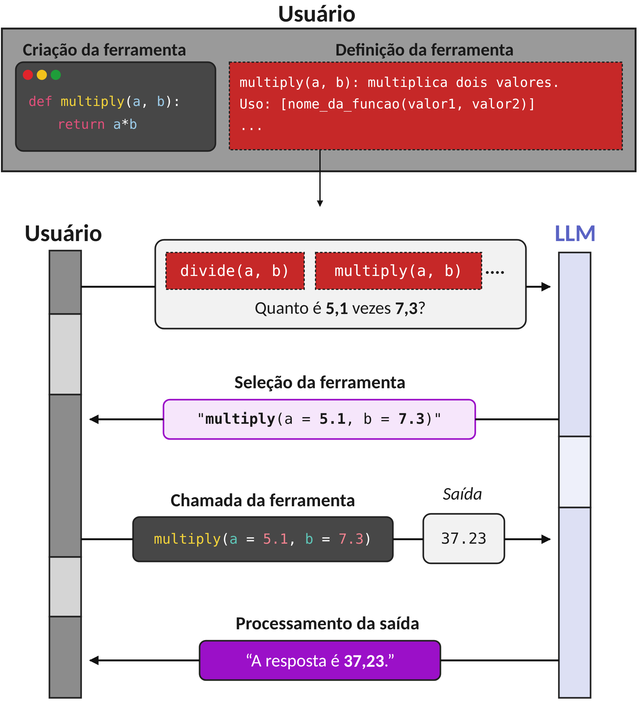
Criação
Ferramentas costumam ser funções acessadas por uma API ou por código interno. Como os LLMs não são conhecidos pelas habilidades matemáticas, o exemplo é uma função multiply(a, b) que multiplica dois valores (recebidos como texto, porque o LLM só produz texto). As ferramentas devem ser bem documentadas, como se fossem feitas para pessoas: o usuário entende o que a ferramenta faz? O retorno está claro? Os nomes das variáveis são descritivos? Isso é ainda mais importante para LLMs, que precisam ser informados explicitamente do que existe e do que cada ferramenta consegue fazer.
Definição
Depois de criada, é preciso informar ao LLM o que a ferramenta faz, como é usada e em que contexto. Há dois caminhos. O uso de ferramentas pode ser aprendido no treinamento: modelos recentes, como Qwen3 e DeepSeek-V3.2, aprendem a reconhecer definições de ferramentas no prompt e a usá-las de forma geral. Ou a definição pode ser passada pelo prompt, de duas formas.
A primeira é descrever as ferramentas em linguagem natural, no prompt de sistema:
Definição de ferramentas em linguagem natural no prompt de sistema. O formato não é padronizado: um pequeno programa (validador ou parser) precisa reconhecer a chamada, o que pode gerar erros se o LLM não seguir as instruções à risca.
A segunda é a chamada de função estruturada (structured function calling): cada ferramenta é descrita por um esquema JSON (JSON Schema) com nome, descrição e parâmetros (tipos e campos obrigatórios). As chaves do esquema fazem parte do formato e ficam em inglês:
Esquema JSON da ferramenta multiply. APIs como a da OpenAI recebem esses esquemas em um parâmetro próprio (tools); na prática, eles costumam ser inseridos no prompt de sistema.
Boas práticas de definição de ferramentas: documente a ferramenta com descrições completas; minimize o número de ferramentas (menos de 10 é um bom começo); e minimize o escopo de cada ferramenta, pois funções com dezenas de parâmetros são difíceis de usar, principalmente para modelos menores.
Seleção
O LLM precisa escolher a ferramenta certa (se alguma for necessária) e usá-la corretamente. Aqui os LLMs de raciocínio se destacam, pois podem "pensar" sobre qual ferramenta usar. Perguntas simples ("Quanto é 1 + 1?") não exigem muito, mas planejar uma viagem com orçamento exige planejamento em vários passos. Quando há muitas ferramentas, encher a janela de contexto com todos os esquemas piora o desempenho, como vimos na engenharia de contexto. Uma solução é guardar os esquemas em um banco vetorial e usar RAG para descobrir as ferramentas mais relevantes para a pergunta.
Chamada
Ao terminar de raciocinar, o LLM produz uma string com a chamada formatada, por exemplo em JSON. Essa saída é apenas a intenção: um programa externo precisa extrair e interpretar o JSON e, então, executar a função. Nesse ponto, pode-se pedir aprovação humana antes de executar ferramentas perigosas (o humano no circuito da Seção 2.6). Bibliotecas como jsonschema e Pydantic ajudam a validar essas chamadas de forma mais robusta do que expressões regulares.
Processamento da saída
O resultado da ferramenta precisa voltar ao LLM. Isso é feito com a mesma estrutura de mensagens da memória de conversa: acrescenta-se uma mensagem do assistente com a chamada e uma mensagem com o resultado. Em LLMs treinados para chamar ferramentas nativamente, existe um papel próprio, tool; nos demais, usa-se o papel user com o prefixo OBSERVATION, como se o usuário tivesse observado o resultado e o contasse ao LLM. Com essas mensagens, o LLM pode combinar, resumir ou apresentar melhor a resposta final.
Histórico de mensagens de uma chamada de ferramenta: o LLM expressa a intenção, o sistema executa e devolve o resultado como observação.
Esses passos devem soar familiares. Os termos THOUGHT (o raciocínio do LLM sobre o que fazer), ACTION (a chamada de ferramenta em JSON), OBSERVATION (o resultado da ação) e ANSWER (a resposta final, após um ou mais passos) são as etapas do framework ReAct (Reason and Act), visto na Unidade 2, que dá autonomia ao agente.
4.3 Model Context Protocol (MCP)
Imagine que você criou prompts e integrações para várias ferramentas e surge um novo LLM com uma forma diferente de chamar ferramentas: seria preciso refazer todas as integrações. Esse é o problema N × M: com N LLMs e M ferramentas, seria preciso escrever uma integração para cada combinação.
O Model Context Protocol (MCP) resolve isso padronizando a forma de conectar ferramentas e APIs aos LLMs. É um padrão aberto, criado pela Anthropic e lançado em novembro de 2024, frequentemente chamado de "porta USB-C da IA". Com ele, o número de conexões a manter passa a ser N + M, e a manutenção da integração passa do usuário para o fornecedor da ferramenta: se a API do arXiv mudar, basta que os mantenedores atualizem o servidor MCP, e todos os usuários recebem a atualização.
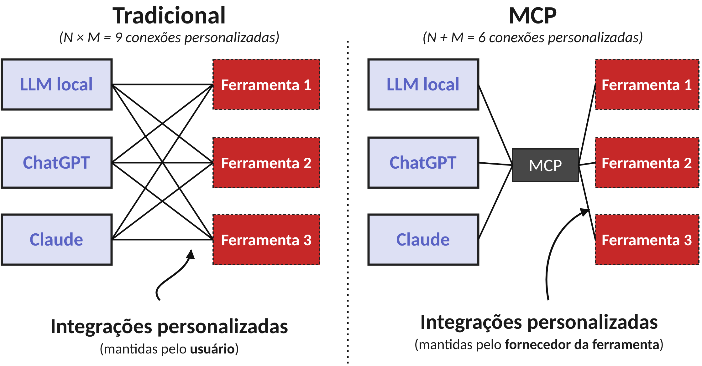
Sem o MCP, cada ferramenta precisaria ser rastreada e passada ao LLM manualmente, descrita manualmente (incluindo o esquema JSON) e atualizada manualmente sempre que a API mudasse. Já existem servidores MCP para Figma, GitHub, Home Assistant e muitos outros serviços.
Componentes do MCP
- Host MCP: a aplicação com LLM que usa ferramentas externas (por exemplo, ChatGPT, Claude, Cursor ou GitHub Copilot). É o "cérebro" do fluxo e inicia a comunicação.
- Cliente MCP: fica dentro do host e mantém uma conexão um-para-um com cada servidor, cuidando da conexão, da descoberta das ferramentas e do encaminhamento das requisições.
- Servidor MCP: programa leve que expõe APIs e ferramentas pelo padrão MCP, geralmente ligado a uma fonte de dados ou serviço (por exemplo, todas as funções da API do arXiv). Os servidores oferecem três tipos de recurso: ferramentas (ações que o LLM pode invocar, como
/list_commits), recursos (dados que o host carrega como contexto, como arquivos e documentos) e prompts (modelos reutilizáveis).
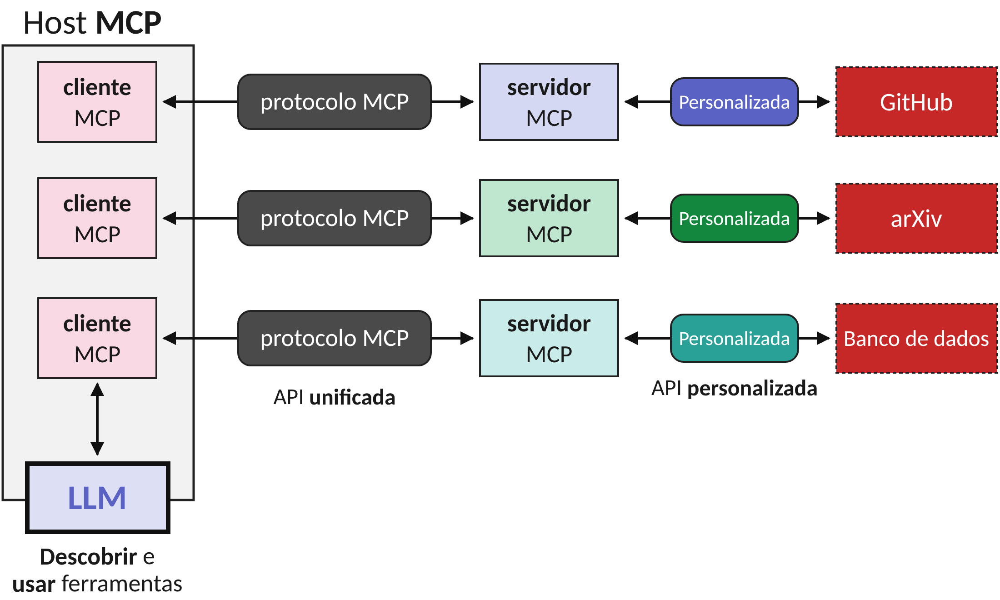
Repare, na Figura 16, que todos os clientes falam com os servidores pela mesma API unificada (o protocolo MCP). A integração personalizada com cada serviço (GitHub, arXiv, banco de dados) fica escondida dentro de cada servidor.
O fluxo do MCP
Vejamos o exemplo, em que o usuário pede ao assistente: "Resuma os 5 últimos commits". O fluxo segue doze passos:
- O prompt é enviado ao host MCP.
- O host pergunta ao servidor MCP, por meio do cliente, quais ferramentas existem.
- O servidor (ligado ao GitHub) devolve a lista de ferramentas, como
/list_commitse/create_pr. - O prompt e as ferramentas disponíveis são enviados ao LLM.
- O LLM decide usar
/list_commits. - O cliente MCP comunica essa ação ao servidor.
- O servidor executa o comando no GitHub.
- O resultado volta ao servidor.
- O servidor devolve o resultado ao cliente e ao host.
- O LLM recebe os resultados e pode usar outra ferramenta ou seguir em frente.
- O LLM resume os cinco commits.
- O resumo é devolvido ao usuário.
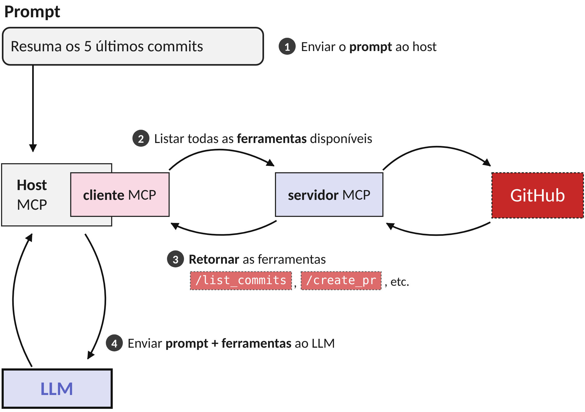
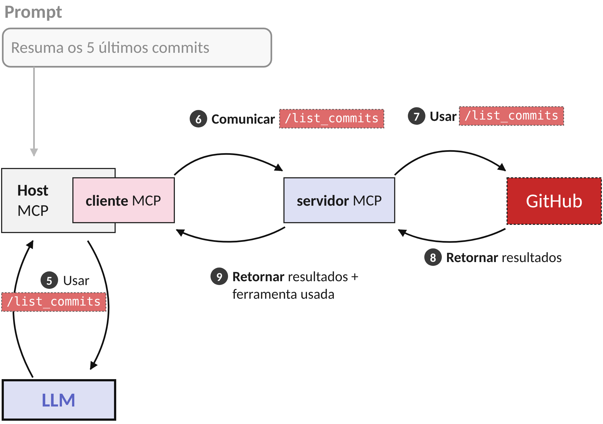
O LLM continua precisando saber chamar ferramentas; a vantagem é que ele descobre as ferramentas existentes, escolhe qual usar e não precisa se preocupar com funcionalidades de API desatualizadas. As mensagens trocadas seguem a especificação JSON-RPC 2.0.
4.4 Skills
Ferramentas e MCP dão ao agente ações que ele pode executar, mas não dizem quando usá-las nem como elas se encaixam em um fluxo de trabalho maior. O agente não conhece o fluxo da sua equipe, as ferramentas preferidas ou os padrões de código; ter de repetir, a cada sessão, que ele deve usar uv em vez de pip é incômodo.
As Skills, criadas pela Anthropic, são um conjunto de instruções, scripts e recursos que o agente usa como contexto para realizar uma tarefa. Elas contêm conhecimento procedural: instruções passo a passo de como abordar uma tarefa no seu contexto. Por exemplo, para criar uma apresentação, o agente pode buscar informação na web (ferramenta), resumir (ele mesmo faz) e criar os slides um a um (ferramenta); a Skill é a "receita" que diz o que fazer, quando e como.
Uma Skill funciona por divulgação progressiva (progressive disclosure): o agente começa com o mínimo de informação e recebe mais detalhes só quando a Skill é usada, em três camadas:
As três camadas da divulgação progressiva e seu impacto no número de tokens (Tabela 5-1 do livro).
Usaremos como exemplo uma Skill que transforma transcrições e anotações de reuniões em atas estruturadas com itens de ação. Toda Skill precisa de um arquivo SKILL.md. O início do arquivo traz os metadados em YAML: o nome (meeting_notes) e a descrição ("Use esta Skill para transformar transcrições ou anotações de reuniões em decisões e itens de ação estruturados"). Os metadados de todas as Skills ficam sempre visíveis ao agente, geralmente no prompt de sistema, para que ele decida se vale a pena explorá-las.
O corpo do SKILL.md traz as instruções, entregues só quando o agente as pede, como se fosse uma ferramenta que fornece contexto. Essa é uma aplicação direta da engenharia de contexto. Quando a Skill cresce (atas de reunião individual com o gestor, com colegas, com a equipe, com parceiros externos), é possível anexar arquivos na pasta da Skill (outros arquivos Markdown e scripts Python) e referenciá-los no SKILL.md, para que o agente os carregue apenas quando necessário.
Estrutura de pastas da Skill de atas de reunião: só o SKILL.md é obrigatório; os demais arquivos são carregados sob demanda.
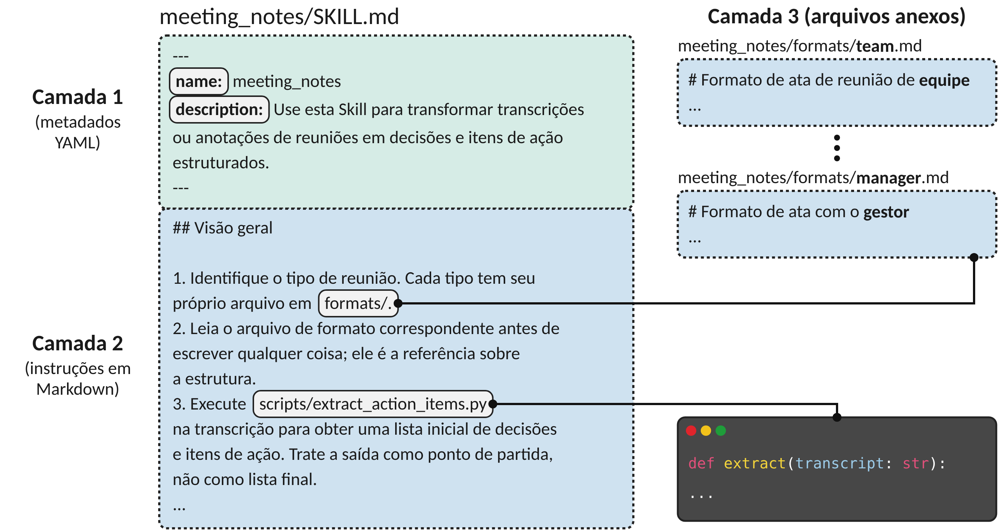
Em resumo: enquanto a definição de uma ferramenta diz ao agente o que ela faz, uma Skill diz como realizar um trabalho (os passos, as convenções e as referências de uma tarefa recorrente), mantendo a janela de contexto enxuta.
5. Sistemas multiagentes
5.1 O que é um sistema multiagente
Até aqui, vimos o agente isolado: uma entidade que planeja, executa e reflete sozinha. Um sistema multiagente (multi-agent system, MAS) contém vários agentes que colaboram, se coordenam ou até competem para atingir um objetivo. Cada agente tem algum grau de autonomia, mas pode ter ferramentas, subobjetivos ou até personalidades diferentes. Por exemplo, em um sistema de pesquisa, em vez de um único agente fazer tudo (buscar na web, processar artigos e figuras, ler e criticar os artigos, resumir), teríamos um agente de busca, um de processamento, um de leitura de artigos, um de sumarização, e assim por diante.
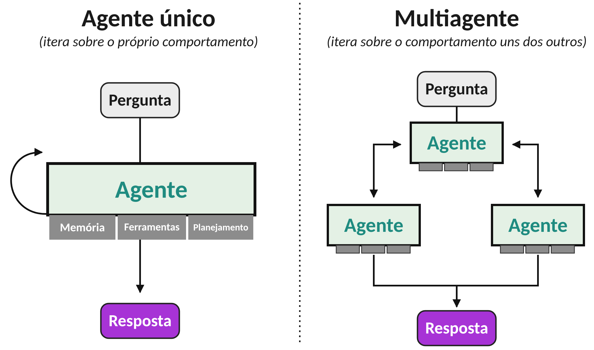
Os agentes podem ou não compartilhar o mesmo ambiente. Por exemplo, um sistema de reservas com um agente que procura lugares para visitar, outro que pesquisa voos baratos e outro que organiza a agenda das férias. Os ambientes podem ser físicos (robôs), virtuais (ambientes de jogo) ou textuais (IDEs de programação, interfaces de chat).
Quanto aos papéis, os agentes podem ser homogêneos (capacidades parecidas, para executar tarefas em paralelo), heterogêneos (papéis e objetivos diferentes, possivelmente com LLMs, memórias e ferramentas diferentes) ou ter especialização emergente (agentes idênticos que, interagindo, evoluem para papéis especializados, como coletar recursos ou defender, em simulações de jogos).
Vantagens e desvantagens dos sistemas multiagentes.
Sistemas multiagentes já são usados na prática. A Anthropic usou vários agentes Claude para construir um sistema de pesquisa; a Uber criou um MAS de recuperação de dados com um agente supervisor e vários agentes de recuperação (como um agente SQL); e a Delivery Hero usa agentes para extrair entidades e criar títulos de produtos, construindo uma base de conhecimento de produtos.
5.2 Padrões de orquestração
Colocar vários agentes em um sistema exige decidir como eles serão organizados, com quais especialidades e como vão se comunicar. Os padrões descrevem a topologia do sistema, ou seja, como os agentes se relacionam e se comunicam. São quatro tipos:
- Centralizado: um único agente orquestrador controla a comunicação e distribui responsabilidades e tarefas. É o mais usado, por ser fácil de implementar e gerenciar; a desvantagem é que o sistema todo pode cair se o orquestrador falhar.
- Descentralizado: os agentes têm responsabilidades parecidas e a comunicação é distribuída, sem um "líder". É o mais estável (se alguns agentes falham, os outros continuam), e escalar é só acrescentar agentes; mas exige muitos agentes capazes e muita comunicação, o que consome recursos.
- Hierárquico: os agentes ficam em camadas, cada nível com um grau de autoridade e papéis distintos. É intuitivo, pois lembra as organizações tradicionais, e permite alocar recursos de forma eficiente; ainda assim, é complexo e é o que exige mais comunicação.
- Federado: os agentes ficam em ambientes paralelos (organizações diferentes) e se comunicam apenas indiretamente, para proteger a privacidade dos dados; cada grupo segue regras diferentes, mas pode compartilhar resultados. É um padrão recente, que favorece a colaboração entre sistemas, mas depende de padrões compartilhados que nem sempre existem.
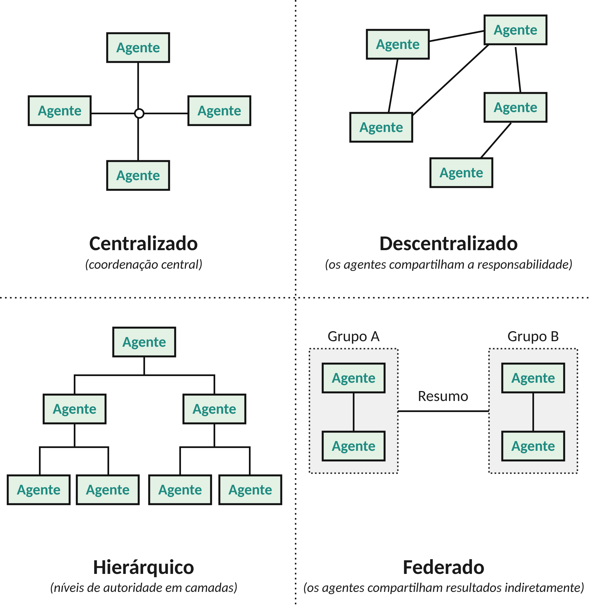
5.3 Subagentes como ferramentas
Um "truque" simples para criar um sistema centralizado (e potencialmente hierárquico) é tratar os subagentes como ferramentas. Primeiro, cria-se um agente de matemática, com as ferramentas somar, subtrair e multiplicar, e um agente de datas, com as ferramentas "data de hoje" e "dias entre duas datas". Depois, cada subagente é "embrulhado" em uma função (ask_math_agent e ask_date_agent), e essas funções são entregues como ferramentas a um agente orquestrador, que decide quando pedir ajuda a cada um. Veja a trajetória do exemplo:
O orquestrador delega a contagem de dias ao agente de datas e o cálculo ao agente de matemática. A resposta muda conforme a data em que o exemplo é executado (este foi gerado em maio de 2026).
Esse exemplo traz duas lições. A primeira é que a ideia é útil quando há dezenas ou centenas de ferramentas: o orquestrador erraria ao escolher entre tantas opções e pode, em vez disso, dedicar subconjuntos delas a subagentes. A segunda é que olhar só a trajetória do orquestrador dá uma visão abstrata do que aconteceu; por isso, é preciso inspecionar também as trajetórias dos subagentes para saber se eles seguiram um caminho eficiente.
5.4 Frameworks para sistemas multiagentes
Não existe um único framework ou padrão ideal para todos os casos; cada framework tem a sua "filosofia".
- CAMEL: um dos primeiros frameworks colaborativos, baseado em interpretação de papéis (role-playing). O usuário propõe uma ideia (por exemplo, "criar um site para o meu blog de IA") e são criados dois agentes: o usuário de IA, que representa o usuário e dá instruções (aqui no papel de "blogueiro"), e o assistente de IA, que executa (no papel de "programador"). Um agente especificador de tarefas reescreve o pedido de forma mais detalhada (por exemplo, "crie um site pronto para produção, usando frameworks modernos como Next.js e Tailwind CSS…"). Em seguida, os dois agentes conversam em vários turnos até o usuário de IA encerrar e devolver a resposta.
- MetaGPT: leva a interpretação de papéis mais longe e imita estruturas organizacionais inteiras, como uma empresa de software. Tem três componentes: especialização de papéis (cada papel tem nome, objetivo, habilidades e restrições, como gerente de produto, arquiteto e engenheiro, e todos seguem um procedimento operacional padrão, trabalhando em sequência, cada um com ReAct); protocolo de comunicação (os agentes se comunicam por artefatos estruturados, como documentos e diagramas, e não só por diálogo); e programação iterativa com feedback executável (cada agente revisa a própria saída; o engenheiro, por exemplo, também executa e depura o código).
- Frameworks de produção: criados do ponto de vista do desenvolvedor, como produtos para construir e escalar sistemas multiagentes. No fim de 2025, os mais comuns eram o AutoGen (Microsoft), o LangGraph e o CrewAI, todos modulares, permitindo escolher papéis, memória, ferramentas e o padrão do sistema. O LangGraph será usado na parte prática da Unidade 7. Também existe o n8n, ferramenta de código aberto de automação de fluxos com IA, em que os fluxos são predefinidos, mas os agentes ainda podem ter alguma autonomia ("no limite" de um sistema multiagente).
6. Referências
- GROOTENDORST, M.; ALAMMAR, J. An Illustrated Guide to AI Agents. Sebastopol: O'Reilly Media, 2026. ISBN 979-8341662698. Disponível em: https://www.oreilly.com/library/view/an-illustrated-guide/9798341662681/. Código-fonte: https://github.com/HandsOnLLM/An-Illustrated-Guide-To-AI-Agents. Acesso em: 10 out. 2026. (Fonte principal: Capítulo 1, Introduction; Capítulo 4, Memory; Capítulo 5, Tool Usage, Learning, and Protocols; Capítulo 8, Multi-Agent Systems.)
- LIU, N. F.; LIN, K.; HEWITT, J.; PARANJAPE, A.; BEVILACQUA, M.; PETRONI, F.; LIANG, P. Lost in the Middle: How Language Models Use Long Contexts. Transactions of the Association for Computational Linguistics, v. 12, p. 157–173, 2024. (Origem do fenômeno e dos dados da Figura 13.)
- RUSSELL, S.; NORVIG, P. Artificial Intelligence: A Modern Approach. 4. ed. Hoboken: Pearson, 2020. (Origem da definição de agente citada na Seção 2.1.)